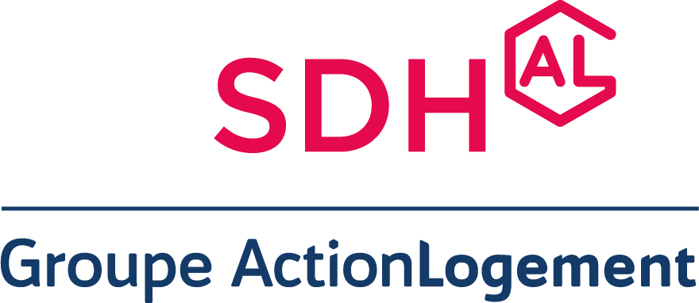
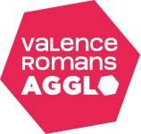

Mario JODAR
Compétences multidisciplinaires entre expertise métier, gestion de données & développement d'applications numériques.
Compétences multidisciplinaires entre expertise métier, gestion de données & développement d'applications numériques.
"Passionné par l’informatique, j'occupe une grande partie de mon temps libre à coder et à la pratique du karaté - un art martial qui renforce ma rigueur et ma persévérance ; des qualités disciplinaires que j'applique pleinement à mes projets professionnels."
Un parcours construit autour de la donnée, du numérique et de la recherche de solutions adaptées aux besoins métiers.
Gestion complète des dossiers immobiliers, de la prise de contact jusqu’à la signature, en gestion locative comme en transaction.
Acquisition de compétences en développement logiciel : HTML, CSS, JavaScript, Python, Django, bases de données et conception d'applications.
Développement de solutions concrètes : applications web, automatisation, gestion de données et outils métiers.

En charge du suivi administratif, technique et relationnel d’un patrimoine immobilier. Gestion des réclamations, coordination des prestataires, suivi des commandes et budgets, contrôle du patrimoine et interface avec locataires, partenaires et services internes. Participation également à l’amélioration des outils et procédures internes. Utilisation de l’ERP métier ULIS

Gestion, contrôle et valorisation des données patrimoniales dans un environnement professionnel. Interface entre besoins métiers, données et outils numériques. Utilisation de l’ERP métier ASTECH.
Applications web, outils personnels et projets orientés données.
Accéder au portfolioDisponible pour échanger autour de projets numériques, de données ou d'applications métiers.